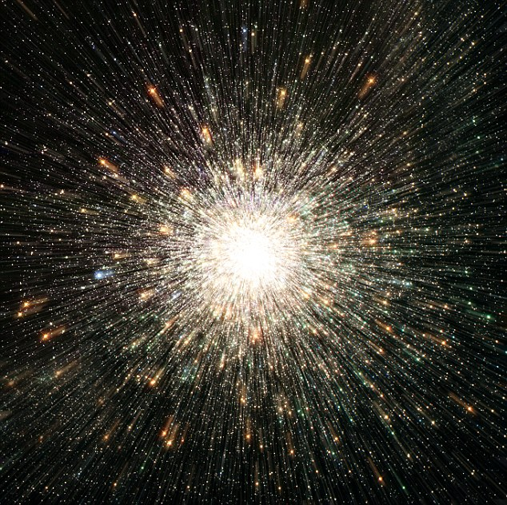
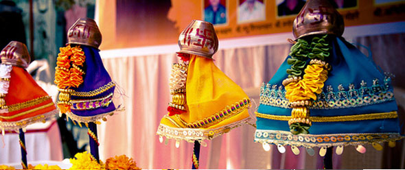

Gudi Padva : The New Year's day as per the Hindu Calendar
Some Facts About Gudi Padva
- The New Year's day as per the Hindu Calendar
- The Current Hindu Year is 2073-74 as per the Vikram Samvat
- The Calendar is synchronized on the basis of the lunar cycle
- This New Year day is known by different names in different parts of India
More About Gudi Padva
From the perspective of Ancient Scriptures

- The Upanishads mention the day of the big bang to be Gudi Padva
- As per the Upanishads. this is the day when the primordial sound of the Om (Also written as ॐ), created the universe
- That the ॐ is timeless and so the universe will expand till the end of eternity
- This day in the Gregorian calendar is in March or April (28 March 2017, current )
From the perspective of Modern Astronomy
- Sun is in Aries on the Gudi Padva day
- The Sun is exactly on top of the intersection of the equator with the meridians
- Its a full moon day
- The day marks the beginning of Spring
From the perspective of Cultures

- Maharshtirans celebrate the day as Gudi Padwa
- Konkanese celebrate the day as Samvatsar Padvo
- Telegus celebrate the day as Ugadi
- Kannadigas celebrate the day as Yugadi
- Sindhis celebrate the day as Cheti Chand
- Kashmiri Pandits celebrate the day as Navreh
A Typical Gudi Padwa Celebration in Mumbai